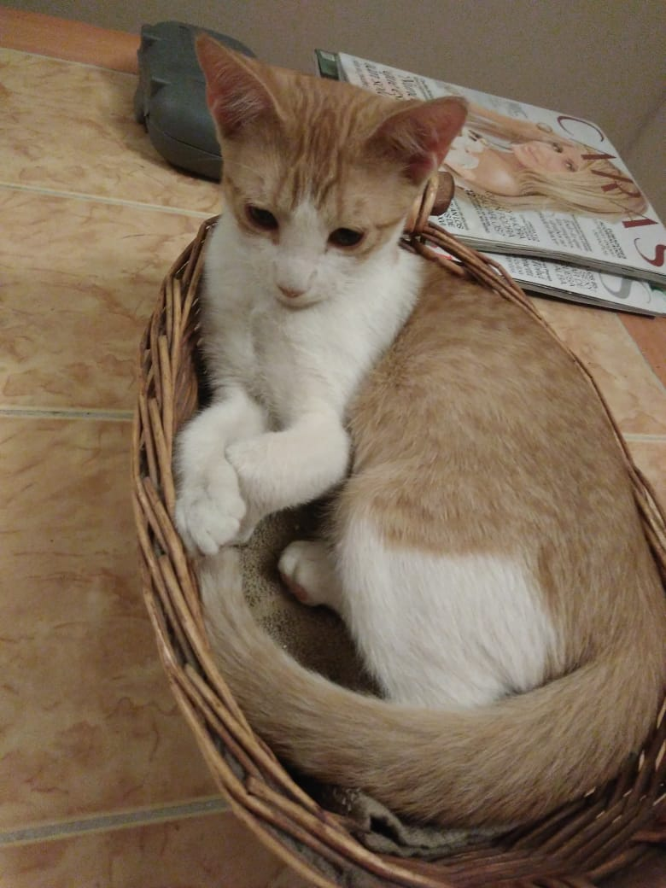

M'aiq el mentiroso
 M'aiq esta cansado, ve a molestar a otro
Nombre: M'aiq
Edad: 2 años
Sexo: macho
Esterilizado: Si
id microchip: 301
M'aiq es un americano de pelo corto que al igual que su hermana adoptiva Deeja debe su nombre a un juego, es formalmente propiedad de Deeja por lo tanto no puede ser adoptado de forma independiente